Selezionare capelli in 5 minuti!
Con Photoshop ora si può fare.
Con l'uscita di Photoshop CS5, Adobe ha introdotto tante comode (e potenti) features che sicuramente ci semplificheranno la vita e velocizzeranno il flusso di lavoro. Una di queste, molto interessante e tanto attesa da chi fa fotoritocco è un nuovo strumento di ottimizzazione della selezione che ci aiuta moltissimo nella complicata procedura di selezione di bordi come capelli, peluria, e tutti quegli oggetti che non hanno un bordo netto.
Vi vado subito a spiegare come selezionare (ed eventualmente ritagliare) una foto come quella riportata qui di seguito in 5 minuti.... forse anche i 2 minuti, con ottimi risultati.
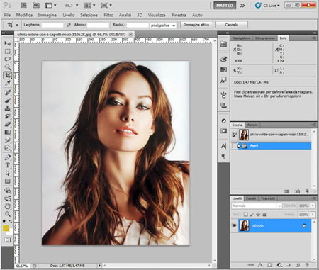
Andiamo a fare una selezione del soggetto con i metodi "automatici" come la selezione rapida o la bacchetta magica, io ho usato quest'ultima per via dello sfondo uniforme che si presta alla selezione per poi invertire e trovarsi selezionata la ragazza in primo piano.
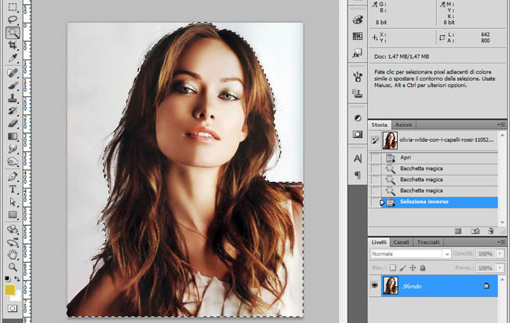
Ovviamente la selezione sarà approssimativa per quanto riguarda il bordo che risulterà frastagliato e totalmente non accettabile nella zona dei capelli. Ora, con la selezione attiva, apriamo lo strumento "Migliora Bordo" dal menuSelezione/Migliora Bordo :
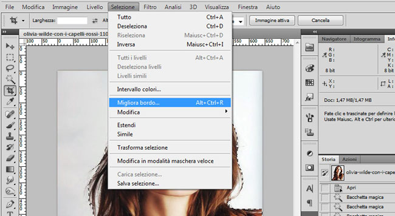
Questo strumento era disponibile anche nelle versioni precedenti di Photoshop, ma qui è stato arricchito con 2 funzioni particolari e abbastanza comode (mi riferisco a Rilevamento Bordo e Output); Qui di seguito ho impostato momentaneamente la visualizzazione "su nero" per evidenziare ancor di più la selezione di partenza fatta velocemente con la bacchetta magica :
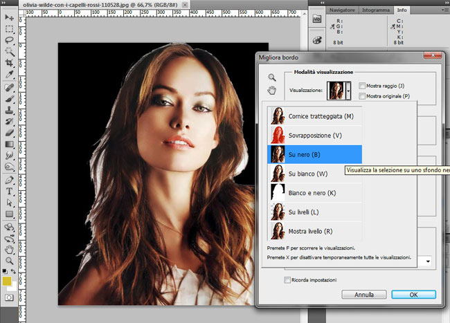
Ora andiamo a lavorare in visualizzazione "Bianco e nero" in modo da avere il feedback esatto della selezione che andremo a creare visualizzando la maschera di ritaglio che lo strumento migliora bordo realizzerà per noi
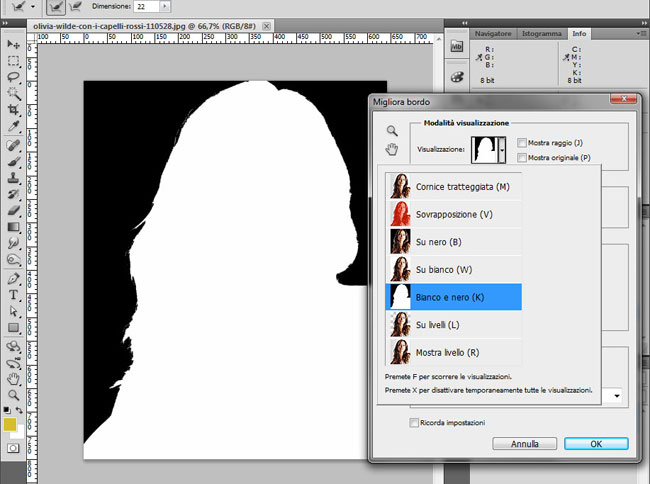
Quindi, andiamo a sfruttare lo strumento pennello di rilevamento del bordo (che si trova a sinistra della sezione rilevamento bordo) andando a tracciare i bordi dell'immagine che photoshop dovrà migliorare e rilevare automaticamente; nel nostro caso la zona dei capelli, quella che la bacchetta non era riuscita ad "isolare" :
Una volta terminata la fase di indicazione del rilevamento del bordo con il pennello al semplice rilascio del pulsante del mouse Photoshop CS5 calcolerà per noi il bordo esterno rilevandolo per differenza di colore. Non c'è che dire, un algoritmo complesso che da risultati di tutto rispetto :
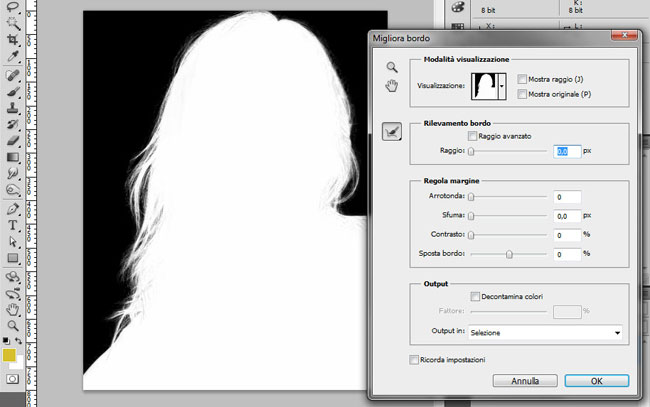
Ora possiamo andare a vedere con la visualizzazione "su Nero" la selezione che abbiamo ottenuto.
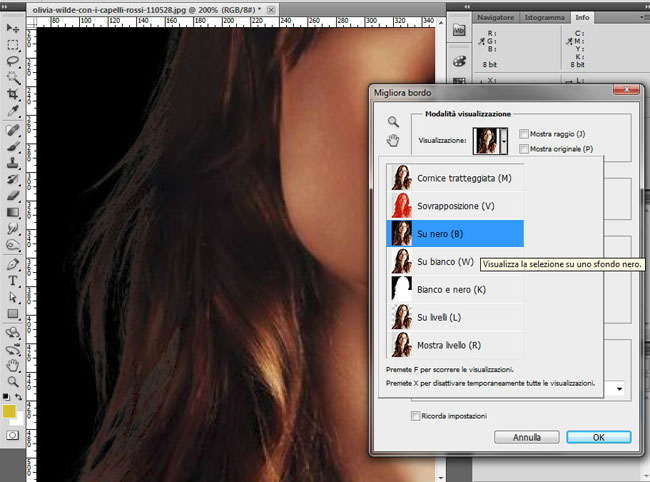
Come avrete notato il bordo del capelli ha ancora una contaminazione dovuta alla sfumatura in trasparenza sul vecchio sfondo, questa "colorazione" errata la possiamo risolvere in parte attivando lo strumento "Decontamina colori" che si trova sempre all'interno della finestra "Migliora Bordo".
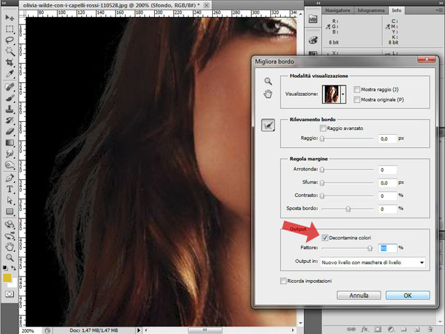
In questa sezione Photoshop CS5 ci permette anche di decidere l'output che vorremmo ottenere dopo la conferma di tutto il processo di miglioramento del bordo, Le alternative sono : la semplice selezione, una maschera di livello, un livello nuovo ecc ecc... basta scorrere "Output in :" e quindi cliccare su "OK" e goderci il risultato finale :
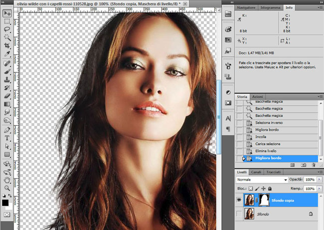
In un tempo impensabile con le precendeti versioni abbiamo realizzato una selezione soddisfacente di un soggetto con il capelli lunghi, cosa sempre complessa sia per il fotoritocco che per le fotocomposizioni.
Per completare il processo ora potremmo applicare la nostra selezione a questa foto di sfondo :
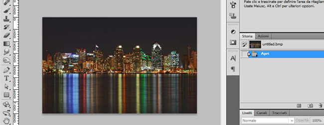
Qui dovremmo solamente adeguare la colorazione dei bordi del livello della ragazza ora troppo chiari per via della forte differenza tonale tra il vecchio sfondo e il nuovo, potremmo farlo agevolmente scurendo i mezzi toni del livello con loStrumento Brucia:
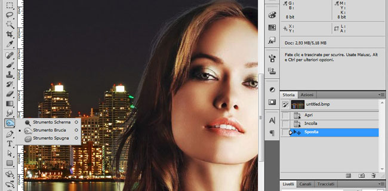
Ottenendo così il seguente risultato finale :
Questo procedimento introdotto in Photoshop CS5, è intuitivo, veloce, e da risultati molto validi riducendo notevolmente il tempo dedicato alle selezioni complicate come quella utilizzata per l'esempio. Facile no ?
Alla prossima !
- Tags: fotoritocco | grafica | photoshop | post produzione